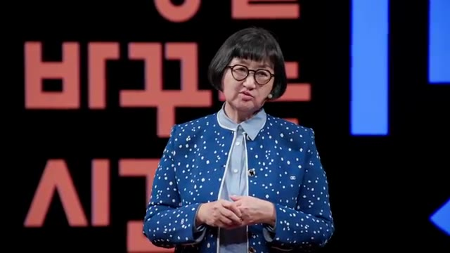

요즘 여기저기서 ‘퍼스널 브랜딩’이라는 말을 많이 들어요. 나만의 강점을 어필하고, 나를 브랜드화해야 성공할 수 있다는 이야기인데… 솔직히 저는 좀 막연하게 느껴졌거든요. ‘나 같은 평범한 사람이 무슨 브랜딩이야?’, ‘그냥 열심히 내 할 일 하면 되는 거 아닌가?’ 하는 생각도 들었고요.
그러던 중, 노희영 브랜드 전략가님의 세바시 강연을 보게 됐어요. 이분이야말로 ‘퍼스널 브랜딩’의 살아있는 증거 같은 분이잖아요. 대기업 임원부터 수많은 브랜드를 성공시킨 분이라니, 그 비결이 궁금하더라고요. 그런데 영상을 보면서 제가 생각했던 퍼스널 브랜딩과는 너무나 다른, 훨씬 더 현실적이고 날카로운 이야기를 듣게 됐습니다. ‘나한테 퍼스널 브랜딩이 정말 필요할까?’라는 질문에 대한 답을 찾을 수 있었어요.
1. 좋아하는 일 vs. 잘하는 일, 뭘 먼저 해야 할까?

강연 초반에 ‘좋아하는 일을 해야 행복할까, 잘하는 일을 해야 할까?’라는 질문이 나왔을 때, 저는 당연히 ‘좋아하는 일’이라고 생각했어요. 그런데 노희영 대표님은 단호하게 ‘잘하는 일부터 시작해야 한다’고 말씀하시더라고요. 좋아하는 일은 나중에 할 수 있는 시간이 온다는 거예요. 처음부터 모든 게 완벽할 순 없으니, 일단 남에게 인정받고 돈을 벌 수 있는 ‘잘하는 일’로 기반을 다지라는 거죠.
이 대목에서 솔직히 좀 충격을 받았어요. 늘 ‘꿈을 쫓아라’, ‘열정을 따라라’는 말을 들어왔는데, 현실적인 조언이라 더 와닿았습니다. 내가 잘하는 일을 통해 인정받고 역량이 쌓여야, 비로소 내가 정말 하고 싶은 일을 할 수 있는 힘과 기회가 생긴다는 말이 맞는 것 같아요. 저도 지금 당장 좋아하는 일에만 매달리기보다는, 내가 잘하는 영역에서 꾸준히 성과를 내는 것에 집중해야겠다는 다짐을 하게 됐습니다.
“처음에는 잘하는 일을 먼저 시작하셔야 됩니다. 그리고 남에게 인정을 받고 그 인정이 그 사람이 여러분한테 폐를 할 수 있는 그런 직업을 가져서 어느 정도 영향이 생기면 그다음에 좋은 일을 할 수 있는 시간이 와요.”
2. 나를 ‘파는 법’ 연구, 대체불가한 나를 만드는 방법
대표님은 ‘나는 누구에게 어떻게 팔릴 것인가’를 연구해야 한다고 강조했어요. 퍼스널 브랜딩이 나 자신을 위한 반성이 아니라, ‘누구에게’ ‘무엇을 위해’ 브랜딩할 것인지 명확한 대상과 목적을 가지고 접근해야 한다는 말이었죠. 이 말을 들으니 퍼스널 브랜딩이 훨씬 더 현실적인 전략으로 다가왔습니다.
특히 인상 깊었던 건, 나를 브랜딩할 때 ‘고칠 점’부터 쓰지 말라는 조언이었어요. 고칠 점만 쓰면 새로 태어나는 게 낫다면서요. 대신 내가 지켜야 할 것, 남이 나를 좋아하는 점, 남보다 우위에 있는 아주 작은 강점이라도 쓰기 시작하라고 하더라고요. 저도 늘 단점 보완에만 급급했는데, 내 강점을 먼저 파악하고 그걸 지켜나가는 것이 훨씬 더 중요한 시작점이라는 걸 깨달았습니다. 나를 대체 불가능하게 만드는 건 결국 나만의 고유한 강점이니까요.
“나는 누구에게 어떻게 팔릴 것인가 그리고 어떻게 인정받을 것인가 그것이 지금 젊은 여러분들이 아침에 일어나서 저녁에 잘 때까지 나를 파는 법에 대해서 연구를 하셔야 돼요.”
3. 위기 속에서 기회를 찾는 용기, 그리고 끈기
강연 중 명량 영화 개봉 에피소드는 정말 놀라웠어요. 세월호 참사가 일어난 해에, 진도 울돌목에서 벌어진 명량대첩 영화를 개봉해야 하는 상황이라니… 회사 내부에서도 반대가 엄청났다고 합니다. 하지만 대표님은 포기하지 않고, 영화를 통해 국민들에게 어떤 감동을 줄 수 있을지 고민하며 돌파구를 찾았어요.
군 장성들을 대상으로 시사회를 열어 ‘이순신 장군에게 빙의된’ 장군들의 입소문을 통해 영화를 홍보하는 전략은 정말 기발하다고 생각했습니다. 단순한 위기 관리가 아니라, 위기 속에서 오히려 기회를 찾아내고, 그 기회를 극대화하기 위한 창의적인 방법을 찾아내는 대표님의 끈기와 혜안이 정말 대단하더라고요. ‘싸워서 이기지 못할 때는 참아야 한다’는 조언과 함께, ‘칼을 뽑아야 할 때’를 아는 지혜가 빛나는 순간이었습니다.
“어려운 일이 많습니다. 그럼에도 불구하고 내가 나서야 될 때, 싸워야 될 때, 참아야 될 때, 그리고 칼을 뽑아야 될 때 이런 것을 다 참을 줄 알아야 여러분들한테 칼을 뽑을 기회가 온다.”
4. 좋은 팔로워가 좋은 리더가 된다는 말의 의미
마지막으로 리더십에 대한 이야기도 깊은 인상을 남겼어요. ‘왜 팔로워가 리더를 판단하냐, 집에 있는 너네 부모님은 마음에 드냐’는 질문은 정말 뼈아픈 일침이었습니다. 리더를 싫어하면서 회사에 다니는 시간은 결국 내 자존심만 상하고 괴롭다는 말에 고개를 끄덕일 수밖에 없었죠.
리더에게 존경할 점이 반드시 있으니 찾아보고, 그 리더를 극복해야 내가 성장할 수 있다는 역지사지의 자세가 중요하다는 것을 배웠습니다. 만약 도저히 안 된다면 미련 없이 이직하라는 현실적인 조언도 좋았어요. 결국 좋은 팔로워가 좋은 리더가 된다는 말은, 타인을 존중하고 그 안에서 배움을 찾으려는 태도가 나를 성장시키는 가장 중요한 자산이라는 뜻이 아닐까 싶습니다.
“팔로우인 내 입장에서 리더를 흠을 잡아서 뭘 하겠어요? 바뀔 것이 없습니다. 그리고 내 자존심만 상해요.”
영상을 다 보고 나니, ‘퍼스널 브랜딩’이라는 것이 단순히 나를 포장하는 기술이 아니라는 걸 깨달았습니다. 오히려 나 자신을 깊이 이해하고, 내가 어떤 가치를 가지고 누구에게 어떻게 기여할 수 있을지 끊임없이 고민하는 과정이라는 생각이 들었어요.
막연하게 ‘나도 브랜딩해야 하나?’ 했던 질문에, ‘아, 이렇게 전략적으로 나를 바라보고 만들어가야 하는구나’라는 명확한 답을 얻은 기분입니다. 오늘부터 저도 제 강점을 찾아보고, 제가 어떤 목표를 가지고 누구에게 저를 ‘브랜딩’할 것인지 진지하게 고민해봐야겠어요. 제 몸값을 10배 띄울 수 있는 결정적인 차이를 만드는 시작점이 될 것 같습니다.